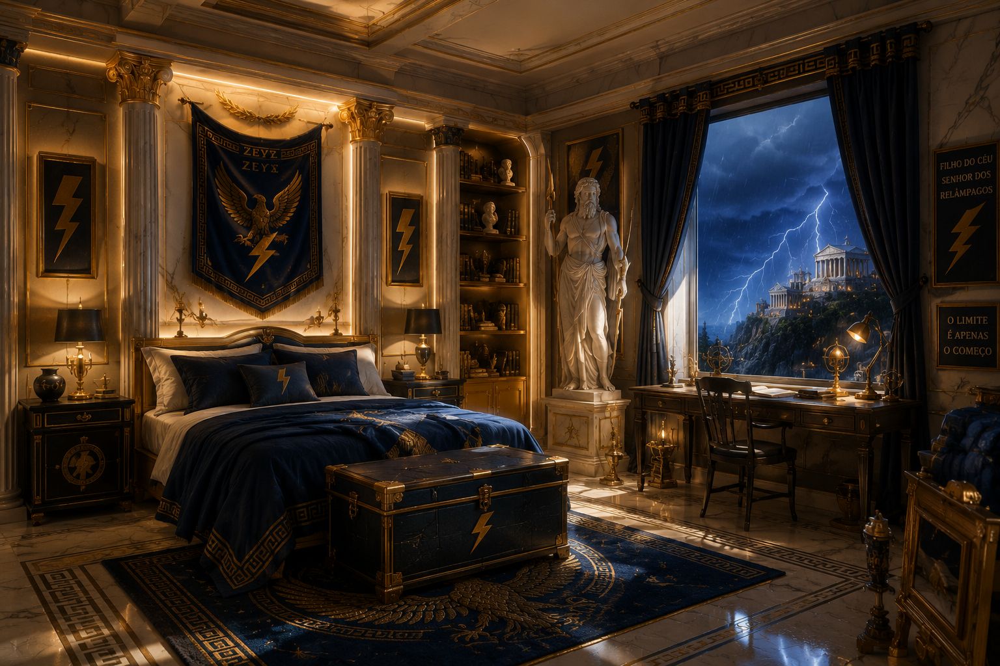
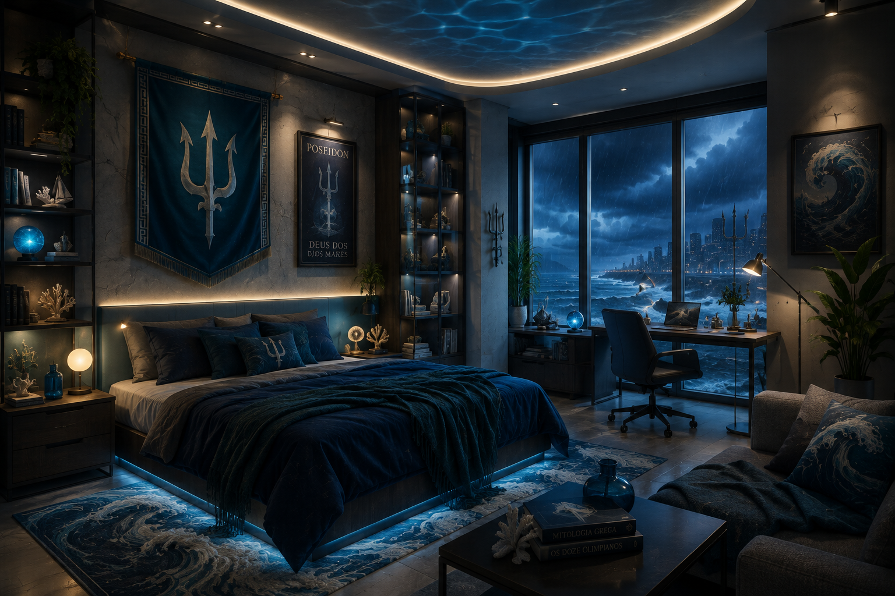

Quartos inspirados na mitologia grega
Explore ideias de quartos inspirados nos deuses e nas características de cada um deles.
Zeus

Um quarto inspirado no deus dos céus, dos raios e rei dos deuses do Olimpo.
Caracteristicas
- Azul escuro
- Branco
- Dourado
- Cinza
Elementos
- Raios
- Nuvens
- Águias
- Detalhes dourados
Poseidon

Um quarto inspirado no deus dos mares, dos oceanos e dos terremotos.
Cores
- Azul
- Azul escuro
- Verde-água
- Branco
Elementos
- Conchas
- Ondas
- Tridente
- Elementos marítimos
Athena

Um quarto inspirado na deusa da sabedoria, estratégia e inteligência.
Cores
- Azul
- Branco
- Bronze
- Bege
Elementos
- Livros
- Corujas
- Escudos
- Elementos gregos
Ares

Um quarto inspirado no deus da guerra, da força e dos combates.
Cores
- Vermelho
- Preto
- Cinza
- Marrom
Elementos
- Escudos
- Armaduras
- Detalhes metálicos
- Símbolos de batalha
Hades

Um quarto inspirado no deus do submundo, das riquezas e dos mortos.
Cores
- Preto
- Roxo
- Cinza escuro
- Prata
Elementos
- Cristais
- Velas
- Detalhes escuros
- Elementos do submundo
Apollo

Um quarto inspirado no deus do sol, da música, da arte e da cura.
Cores
- Dourado
- Amarelo
- Laranja
- Branco
Elementos
- Sol
- Lira
- Arco e flecha
- Plantas
Artemis

Um quarto inspirado na deusa da caça, da natureza e da lua.
Cores
- Verde escuro
- Prata
- Azul escuro
- Branco
Elementos
- Lua
- Arco e flecha
- Plantas
- Elementos da natureza